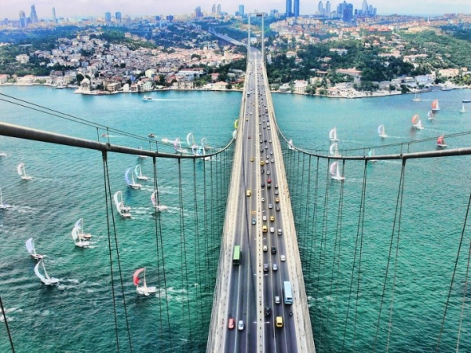

Босфорський міст
Цей міст не можна зарахувати до найбільших або довгим, особливою красою не володіє, і все ж таки не включити його в огляд просто не можна. Адже він з'єднує Європу та Азію. Його закінчили в 1973-му році, а в 2005-му американська тенісна зірка Венус Вільямс провела на мосту матч з турецьким гравцем ІПЕК Сеноглу. І це був перший матч, який проводився відразу на двох континентах.
